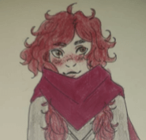

My name is Kayleigh Lindsay!
I am a 19 year old who lives in Dublin, Ireland.
I am a first year college student studying Creative Digital Media in the Technological University Dublin Blanchardstown Campus. I picked this course as I have always been interested in creating- even as a young child (I can recall very early memories of drawing), and I am also interested in the growing technological world. I felt this course is a perfect harmony of the two; and would allow me to express myself in multiple different platforms unlike other creative courses therefore I pursued it, and here I am!
From the ages of 10-14, I attended a local art and crafts club twice a week, where I got the chance to express my creativity in front of my peers and to gain confidence in my work. I took Art from first to third year in Secondary school, did it twice a week through the entirety of Transition Year, and took Art History and Appreciation for my Leaving Certificate. I have won several art awards in my school, including an end of year Senior Award for art. Only one student between 4th-6th year gets this award! I applied to a summer portfolio course in the National College of Art and Design and ended up getting a scholarship for it!
I am very passionate about arts and crafts.
